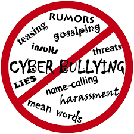

Cyberbulling is a form of bullying that takes place online, be it on social media, through instant messengers
, forums and so on. Any form of online space that offers communication between people can be a place
where forms of cyberbullying take place. This kind of bullying can come in many forms, such as:
- Harrasment - This is where one, or multiple people send rude, offensive or abusive messages to a person.
They may also send this as comments on content someone has uploaded.
- Slander/Denigration - When someone posts information online about another person, which is untrue, with a
purpose of making them look bad and having an adverse effect on their reputation. This is typically in the
form of rumors and gossip.
- Trolling - This is where someone will purposefully say something controversial or mean in an attempt to
get another into an online argument, and it is done typically to get a reaction out of people and cause
distress.

If you are on the recieving end of any form of online bullying, there are a number of different approaches
you can take to mitigate and finally stop any abuse you may be on the recieving end of:
- Tell someone - You do not have to sit their in silence, reach out to the people in your life, be it parents,
friends, your teacher, and even the police can offer you help and guidance in how best to proceed to deal with
cyberbullying
- Reporting - If someone is cyberbullinyg you on a social media platform, it is most likely the case that they are
going aginst the terms of service. Therefore you should use the available options to report them to the social network,
whether it be Facebook, Twitter, and so on
- Ignore - This method is best used when you are only recieving light name calling or such, as chances are the person is trying
to troll you and get a reaction from you. It is suggested in these case to "not feed the trolls" and ignore their attempts
to get a rise out of you
If you feel like you need to talk to someone, we have some useful links you can use to get help